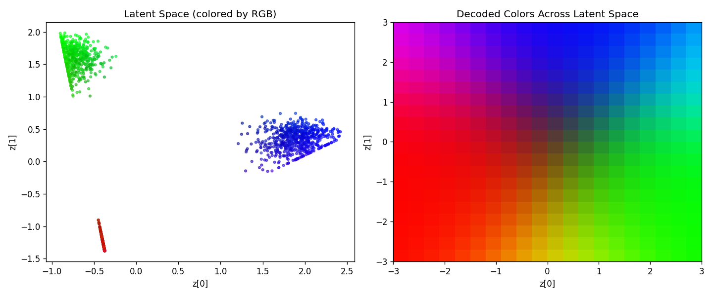

The next topic that I wanted to explore was variational autoencoder (VAE). I wanted to keep things as simple as possible, and so I made an RGB color picker through 2D latent space. Below is a demo and the mistakes I made creating this. Click anywhere in the latent plane below and the decoder turns that coordinate into a colour.
A VAE on Colors
Live demo
Latent space z ∈ [-3, 3]². Background = decoded colour, dots = encoded training colours. Click to decode a point.
Latent z
—
Decoded colour
—
Swatch
Click anywhere in the latent plane.
How it works
A VAE encodes it to a distribution. The encoder maps an RGB colour to a mean
μ and log-variance log σ² over the 2D latent
space. We sample z = μ + σ ⊙ ε (the reparameterisation
trick, so gradients still flow), and the decoder maps z
back to RGB.
Training balances two terms: a reconstruction MSE, and a KL divergence pulling every encoded posterior towards a unit Gaussian. That KL term is what makes the latent space continuous as nearby points decode to similar colours, which is exactly what the demo above shows.
Two things bit me. First, I initially trained on fully random colours,
which just taught the model to predict the mean which is grey. Switching to
three distinct R/G/B blobs gave it real structure to learn. Second, the
KL term was overpowering reconstruction and collapsing every input to
the same point (posterior collapse); weighting it with a small
β = 0.1 fixed it.
Latent space
Left: each training colour plotted at its encoded mean. Right: the decoder swept across a grid of the latent plane — a smooth colour map.

Code
Full source on GitHub — abridged here for readability.
import torch
import torch.nn as nn
from torch.nn import functional as F
class Model(nn.Module):
"""A tiny VAE: 3-D RGB <-> 2-D latent space."""
def __init__(self):
super().__init__()
self.enc = nn.Linear(3, 2)
self.enca = nn.ReLU()
self.mean = nn.Linear(2, 2)
self.lvar = nn.Linear(2, 2)
self.dec = nn.Linear(2, 3)
self.deca = nn.Tanh()
def encode(self, x):
r = self.enca(self.enc(x))
return self.mean(r), self.lvar(r)
def decode(self, z):
return self.deca(self.dec(z))
def forward(self, x):
mu, lv = self.encode(x)
std = torch.exp(0.5 * lv)
eps = torch.randn_like(std) # reparameterisation trick
z = mu + std * eps
return self.decode(z), mu, lv
def loss_function(preds, target, mu, lvar, beta=0.1):
mse = F.mse_loss(preds, target)
# KL divergence between the encoder posterior and a unit Gaussian.
kld = -0.5 * torch.mean(1 + lvar - mu.pow(2) - lvar.exp())
return mse + beta * kld # beta tames posterior collapse